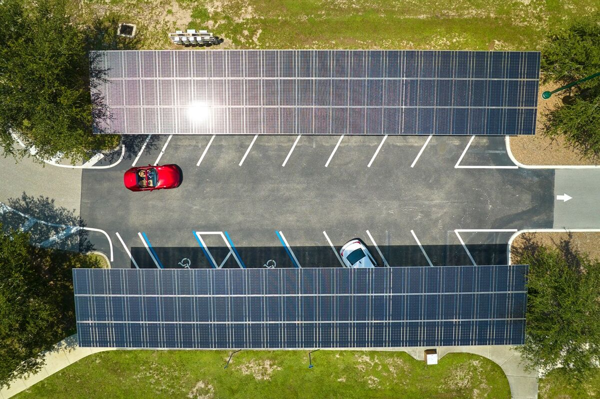

No vendemos una tecnología antes de entender el problema.
Una inversión energética puede afectar costos operativos, exposición tarifaria, continuidad, capacidad de expansión y objetivos ambientales. Por eso el punto de partida es entender cómo funciona la operación.
Diagnóstico
Consumo, demanda, infraestructura, restricciones y objetivos del negocio.
Modelado
Escenarios comparables antes de comprometer capital.
Ingeniería
Definición de arquitectura, equipamiento e implementación.
La misma solución cambia según la operación.
Industria, agroindustria y logística tienen curvas de carga, riesgos operativos y condiciones de infraestructura diferentes.

Demanda, continuidad y expansión productiva.
Cuando la energía impacta directamente en margen y capacidad de producción.

Estacionalidad, bombeo, frío y operación remota.
Escenarios donde el promedio anual puede ocultar el verdadero problema.

Disponibilidad energética para centros que no se detienen.
Depósitos, cámaras, flotas eléctricas y parques industriales.
De una primera hipótesis a una decisión defendible.
El proceso avanza sólo cuando la información de la etapa anterior justifica profundizar la siguiente.
Relevamiento energético
Facturación, horarios, equipamiento, superficie, infraestructura y planes de crecimiento.
Escenarios técnico-económicos
Comparación de alternativas, supuestos y sensibilidad antes de definir inversión.
Ingeniería y ejecución
Arquitectura, documentación, equipamiento, implementación y puesta en marcha.
Seguimiento
Performance, mantenimiento y nuevas oportunidades de optimización.
Qué conviene saber antes de pedir una propuesta.
¿Qué información necesita Ecorise para una primera evaluación?
Facturas recientes, consumo, horarios de operación, cargas relevantes, ubicación y cualquier restricción conocida. Con eso se puede definir qué información adicional vale la pena relevar.
¿Se puede estudiar energía solar sin tener todavía un proyecto definido?
Sí. Una prefactibilidad sirve para evaluar si la oportunidad justifica avanzar a ingeniería o compra de equipos.
¿Ecorise trabaja sólo con empresas grandes?
El criterio principal no es el tamaño formal de la empresa, sino que exista un problema energético suficientemente relevante y una oportunidad clara de análisis o inversión.
El proyecto no termina cuando se instala el sistema.
Una infraestructura energética necesita seguimiento, mantenimiento y revisión a medida que cambian tarifas, operación y necesidades de la empresa.
¿Hay una oportunidad energética en tu empresa?
Una primera conversación permite determinar qué vale la pena estudiar y qué no.
Agendar diagnóstico